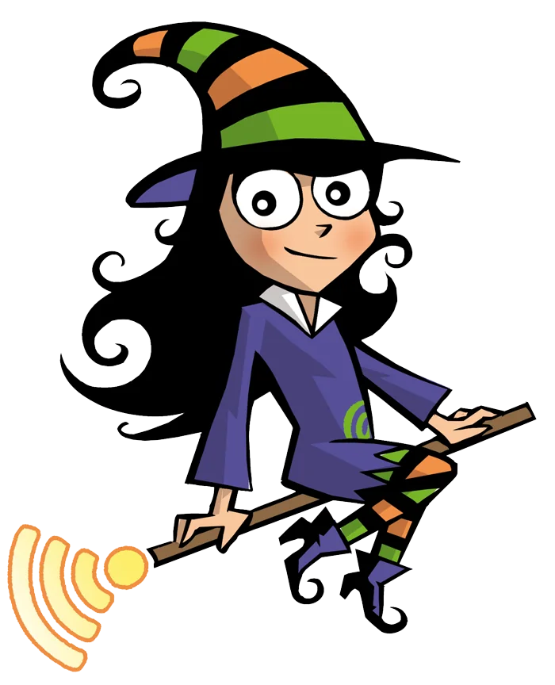
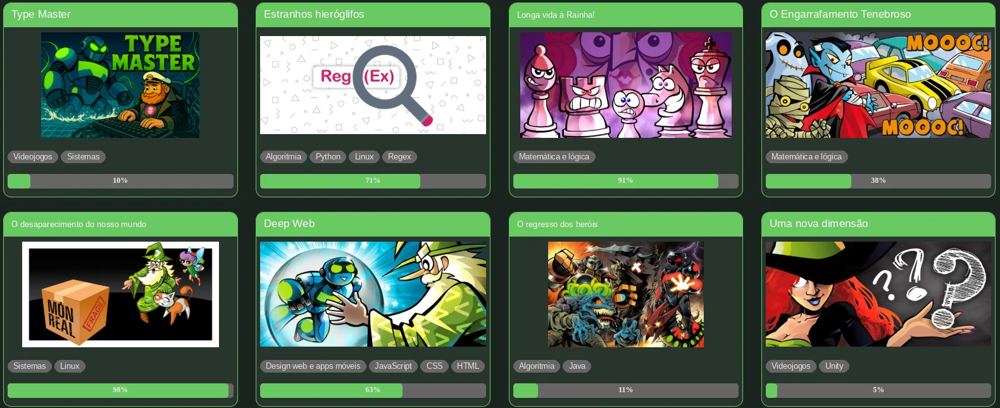
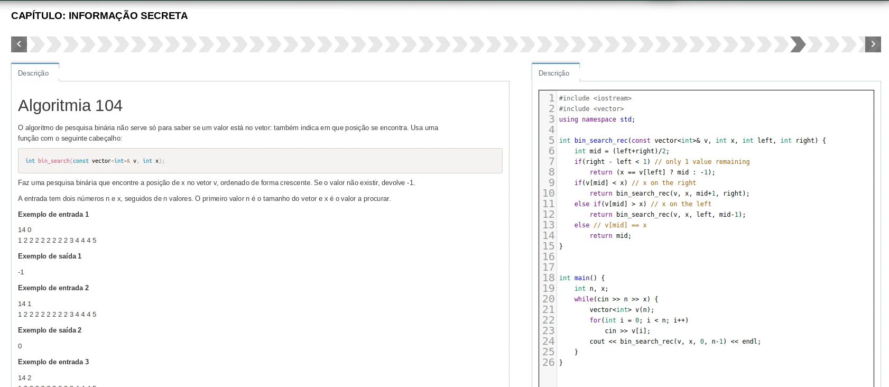
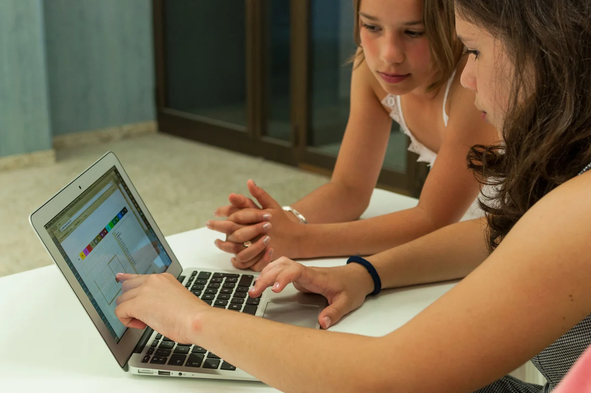
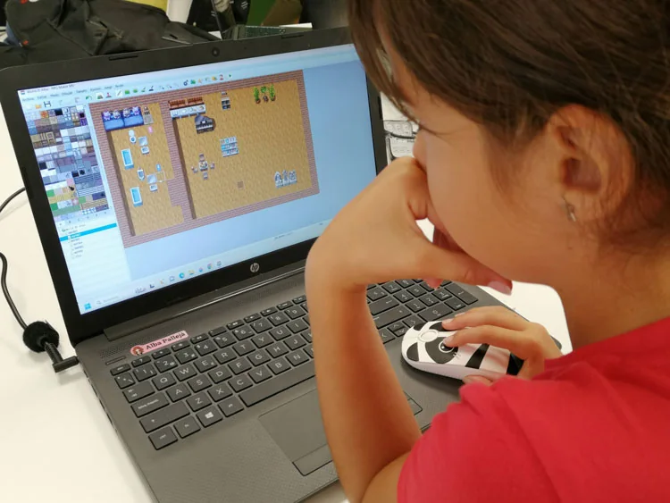
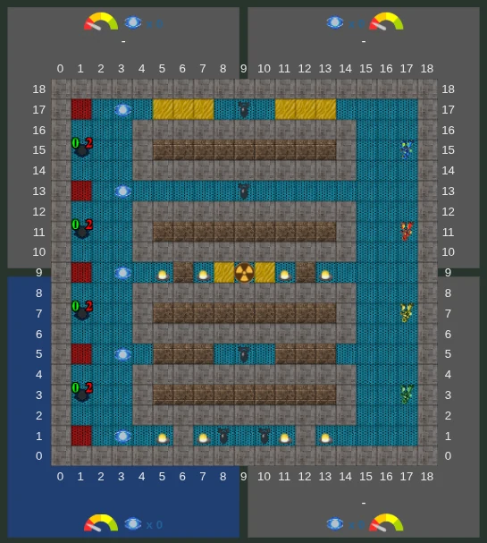
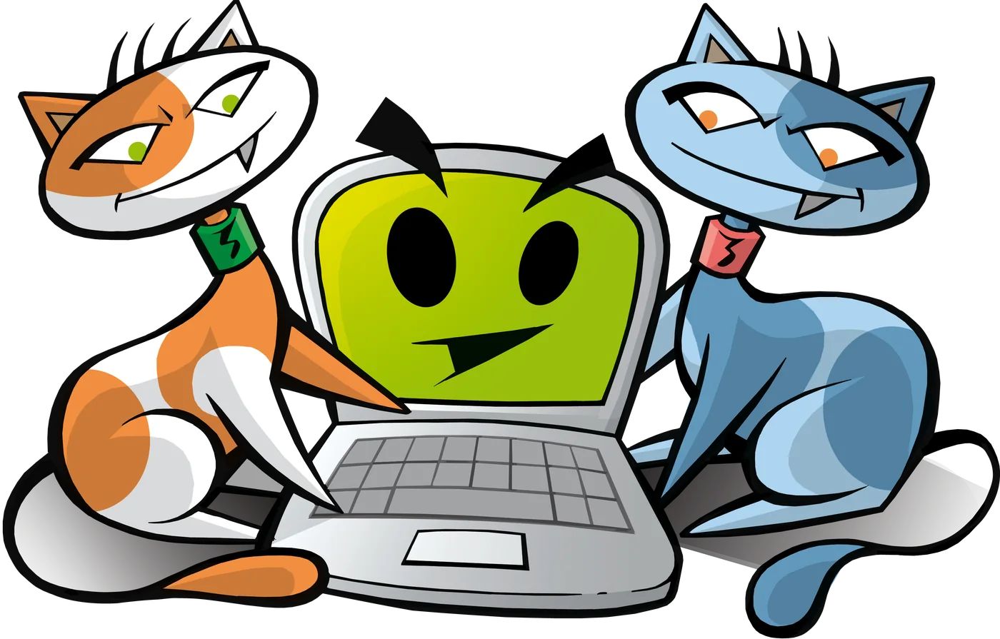
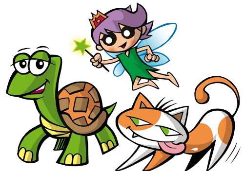

🧩
Decomposição
Partir um problema grande em partes pequenas que se resolvem uma a uma.
Para crianças e jovens a partir dos 7 anos: lógica, matemática, criatividade e resolução de problemas, através da programação. A jogar, a partir de casa e ao seu ritmo.
# Ajuda o Agustí a apanhar os cristais
def recolher(mapa):
cristais = 0
for casa in mapa:
if casa == "💎":
cristais += 1
return cristais
Só precisas de um computador com internet. Cada curso é uma aventura em banda desenhada e cada exercício um desafio em que o aluno é o herói.
Em dois minutos, e começas logo nesse dia. Os primeiros 15 dias são grátis e podes desistir a qualquer momento.
Resolve desafios para ajudar as personagens a vencer os vilões. Cada exercício resolvido dá pontos e faz subir de nível.
15–20 minutos por dia chegam. A plataforma adapta-se ao ritmo de cada aluno e há professores para tirar dúvidas. Se quiseres, juntas uma aula semanal por videochamada.


Não queremos que todos os alunos sejam programadores. Queremos que aprendam a pensar: a raciocinar com lógica, a resolver problemas e a criar em vez de apenas consumir tecnologia.
Hoje quase todas as crianças sabem usar a tecnologia. Aqui aprendem a percebê-la e a criá-la — um complemento perfeito para o que fazem na escola. As ferramentas vêm e vão; a capacidade de resolver problemas fica para a vida toda.


O pensamento computacional é a capacidade de resolver problemas de qualquer tipo — não só os de informática. Programar é a melhor forma de o treinar, e assenta em quatro ferramentas:
Partir um problema grande em partes pequenas que se resolvem uma a uma.
Reconhecer semelhanças e estruturas que se repetem — na matemática, nos jogos, no dia a dia.
Ficar com o essencial e ignorar o ruído: perceber o que realmente importa num problema.
Desenhar passos claros e ordenados até à solução — e corrigi-los quando falham.
Pelo caminho trabalham-se também a criatividade, o pensamento crítico, a perseverança e uma relação saudável com o erro: em programação, errar é só o primeiro passo para acertar.
Além das aventuras de programação, a plataforma tem aventuras e ginásios temáticos que reforçam a matemática, a lógica e outras áreas da escola — sempre a jogar.
As aventuras de matemática do Jovem Agustí põem à prova a agilidade mental: cálculo, padrões, álgebra e lógica matemática.
Sequências numéricas, enigmas de engenho e puzzles de lógica em que é preciso planear cada movimento antes de o fazer.
Xadrez, Go, cubo de Rubik e o Boolean Attack, um jogo de cartas para perceber as portas lógicas.
Uma secção para praticar inglês como se fosse um jogo — a língua em que a tecnologia mais se escreve.
Boas práticas de cibersegurança, como funciona um sistema operativo, ferramentas de IA generativa e o seu uso responsável, e um passeio pela história da informática.
A plataforma ganha aventuras e conteúdos novos regularmente, para acompanhar o que vai mudando no mundo da tecnologia.
Se a inteligência artificial já escreve código, ainda vale a pena aprender a programar? Mais do que nunca. O futuro não é humanos contra máquinas: é humanos com máquinas — e quem percebe como funcionam é quem as dirige.
«Os criadores do futuro começam aqui.»
Um plano para acompanhar toda a etapa escolar, testado com milhares de alunos e atualizado continuamente.
A base de todos os alunos.
Os primeiros projetos reais: webs, apps, jogos 2D, robôs.
Aplicações completas, 3D, realidade virtual e segurança.
Redes neuronais, sistemas e liderar projetos.
Ir mais fundo no que mais gostas.
Isto é um resumo: dentro de cada nível as aventuras abrem-se em árvore e há muitas mais pelo meio.
Online não quer dizer isolado. Ao longo do ano há competições, ligas e concursos na plataforma para jogar, competir e fazer equipa com alunos de todo o lado.
Um eSport de programação: partidas multijogador em tempo real em que ganha quem guia o robô Karel com mais precisão, estratégia e rapidez.

A liga de programação por equipas: forma um clã, resolve desafios e sobe de divisão.
Campeonatos online na plataforma, com fase de qualificação, liga e final ao vivo.
No Halloween, no Natal e noutras datas: desenhos programados em Logo e vídeos, com votação de todos e júri.
A minha filha começou a aprender programação com o método Codelearn e o melhor é que se diverte imenso! Todos os dias me mostra o que fez — se calhar ainda me inscrevo eu também.
A Codelearn é o complemento ideal para o secundário, porque ensina formas de resolver problemas que podes aplicar a tudo.
Os meus filhos passavam o dia a fazer os exercícios da Codelearn. Aqui não me custa nada pô-los a fazer os trabalhos de casa! Divertem-se, aprendem e já sabem mais de computadores do que eu.
«Quer queiras descobrir os segredos do universo, quer queiras apenas seguir uma carreira no século XXI, programar é uma competência essencial.»
«O pensamento computacional é uma competência fundamental para todos, não só para os informáticos. À leitura, à escrita e à aritmética, devíamos juntar o pensamento computacional.»
«Quando aprendes a ler, podes ler para aprender. Com a programação é igual: se aprendes a programar, podes programar para aprender.»

Dois planos simples: só a plataforma, ou plataforma com uma videochamada semanal em grupo pequeno. E com 15 dias grátis para experimentar.
A partir do momento em que a criança lê com facilidade, por volta dos 7 anos. Não há limite de idade: também há muitos adultos a aprender com o método Codelearn. Entre os 7 e os 12 anos, convém que os pais ajudem a manter a rotina de entrar na plataforma.
Não. A plataforma funciona no navegador (Chrome, Firefox…). Basta um computador com ligação à internet.
Recomendamos 15–20 minutos por dia, 4 a 7 dias por semana. Programar é como aprender uma língua ou um instrumento: a regularidade conta mais do que as horas seguidas.
Não. Por segurança, pedimos os dados de pagamento na inscrição, mas não é feita nenhuma cobrança até terminar o período de experiência. Se desistires dentro desses 15 dias, não pagas nada.
Experimenta a Codelearn grátis durante 15 dias. Sem compromisso, estejas onde estiveres.
